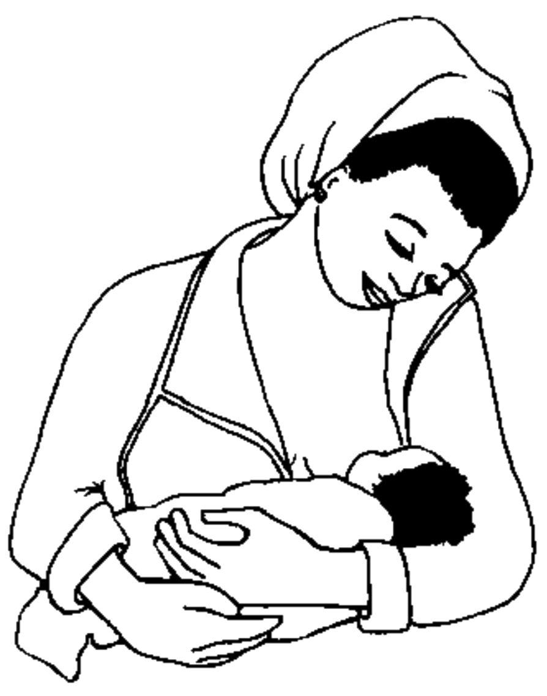

Sagdyn we syrkaw çaganyň iýmitlenmesi boýunça maslahatlar (Ýeterlik derejedäki iýmit bu möçberi boýunça ýeterlik we ýokary derejedäki ýokumly iýmitleri öz içine almaly (mysal üçin, goýy ýarmalar ösümlik ýagy bilen); et, balyk, ýumurtga ýa-da kösükliler; gök-önümler we miweler)
6 aýa çenli
 Çagany göwüsden onuň islegine görä gije-gündiziň dowamynda emdiriň, azyndan 8 sapar. Ýygy-ýygydan emdirmeklik ejesiniň süýt emele gelmesini köpeldýär.
Çagany göwüsden onuň islegine görä gije-gündiziň dowamynda emdiriň, azyndan 8 sapar. Ýygy-ýygydan emdirmeklik ejesiniň süýt emele gelmesini köpeldýär.- Eger-de bäbek 1 hepdeden kiçi bolsa, we ol pes agramda
- dogulan bolsa, ony azyndan 2-3 sagatdan emdiriň, çagany
naharlamak üçin her 3 sagatdan oýaryň.
- Çaga hiç-hili başga iýmitleri we suwuklyklary bermäň.
- Eger çaga 4 aýlykdan uly bolsa we emdirilenden soň aç ýaly bolup görünse we ol agrymyny gowy almaýan bolsa:
 Goşmaça iýmitleri berip başlaň (aşak seret).
Goşmaça iýmitleri berip başlaň (aşak seret).- Goşmaça iýmiti 2-3 çemçe 1 ýa-da 2 sapar günüň dowamynda göwüsden emdirilenden soň
beriň.
6 aýdan 12 aý aralygyndaky çagalar
- Çagany göwüsden gije-gündiziň dowamynda, azyndan 8 sapar emdirmekligi dowam ediň.
- Ýaşaýan ýeriňizde mahsus bolan ýokumly iýmitlerden çaga ýeterlik derejede beriň (mysallar
31-nji tablisada görkezilen):
- 3 sapar günüň dowamynda, eger çaga göwüsden emdirilýän bolsa;
- 5 sapar günüň dowamynda, eger çaga emeli süýtler bilen emdirilýän bolsa; we 1-2 käse süýt
goşmaça.
12 aýdan 2 ýaş aralygyndaky çagalar
- Çagany göwüsden gije-gündiziň dowamynda emdiriň, onuň islegine görä.
- Ýaşaýan ýeriňizde mahsus bolan ýokumly iýmitlerden ýa-da maşgalanyň iýýän naharlaryndan
çaga 5 sapar günüň dowamynda beriň (mysallar 31-nji tablisada görkezilen).
- Esasy iýmitleriň arasynda bir ýa-da iki sapar uly bolmadyk möçberlerdäki iýmiti çaga hödür
ediň, şeýlede çagany köpräk iýmäge göwnetjek boluň.
2 ýaş we ondan uly çagalar
- Çaga günüň dowamynda 3 sapar maşgalanyň iýýän naharlaryndan beriň. Mundan başgada 2 sapar goşmaça esasy iýmitlenmeleriň arasynda (mysallary 31-nji tablisada seret).
- Çagany iýmilendiren wagtyňyz onuň bilen nahar barada gürleşiň we gözlerine serediň.